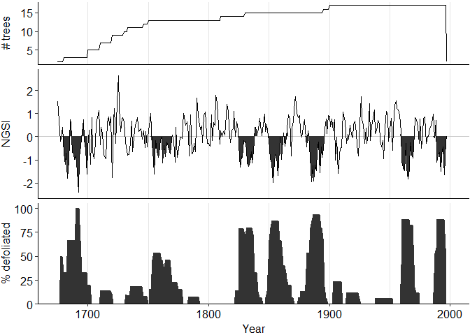

The goal of dfoliatR is to provide dendrochronologists with tools for identifying and analyzing the signatures of insect defoliators preserved in tree rings. The methods it employs closely follow (or in some cases exactly replicate) OUTBREAK, a FORTRAN program available from the Dendrochronological Program Library.
When using dfoliatR in a publication, please cite the paper:
Guiterman, CH, AM Lynch, and JN Axelson (2020)
dfoliatR: An R package for detection and analysis of insect defoliation signals in tree rings. Dendrochronologia. DOI: 10.1016/j.dendro.2020.125750.
Installation
You can install the released version of dfoliatR from CRAN with:
And the development version from GitHub with:
Usage
The package requires users to input two sets of tree-ring data: standardized ring widths of individual host trees and a standardized tree-ring chronology from a local non-host tree species or climate series. dfoliatR combines these to remove the climate signal represented by the non-host chronology from the host tree series. What’s left should represent a disturbance signal. Then dfoliatR identifies defoliation events in the host tree series.
We recommend that the input tree-ring data be standardized in either ARSTAN or the dplR R package. If there is more than one ring-width series from the same tree, these should be standardized and averaged to the tree level. In ARSTAN, make sure to output ‘.TRE’ files and read them into R with the read.compact() function in dplR. If you choose to standardize raw ring widths in dplR with detrend(), then use the treeMean() function to generate tree-level series. All data input to dfoliatR needs to be an rwl object as defined in dplR.
Example
Here we briefly explore defoliation and outbreaks patterns for a Douglas-fir site in New Mexico. These data are included in the package
To start out, we identify defoliation events on individual trees,
## Identify defoliation signals
dmj_defol <- defoliate_trees(host_tree = dmj_h, nonhost_chron = dmj_nh)
## Plot the results
plot_defol(dmj_defol)
And then scale up to outbreaks by compositing across the site via
## Identify site-level outbreak patterns
dmj_obr <- outbreak(dmj_defol)
## Plot those results
plot_outbreak(dmj_obr)
Further resources
Analyses of the tree series (termed defol objects) can be done via:
To identify ecologically-significant outbreak events, use the outbreak() function. Various filters are available to aid users in defining outbreak thresholds. Analyses of outbreak series (termed obr objects) can be done via:
For the full range of usage in dfoliatR, please visit the introduction vignette.